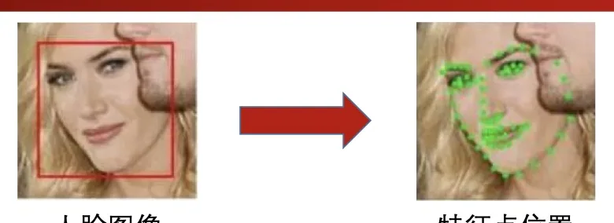
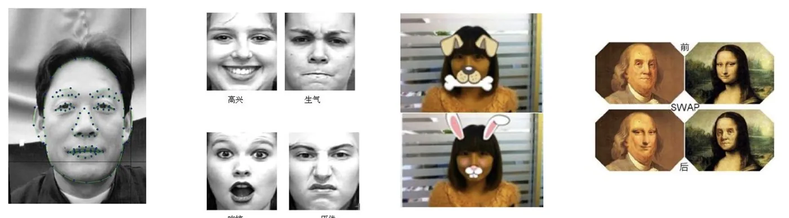
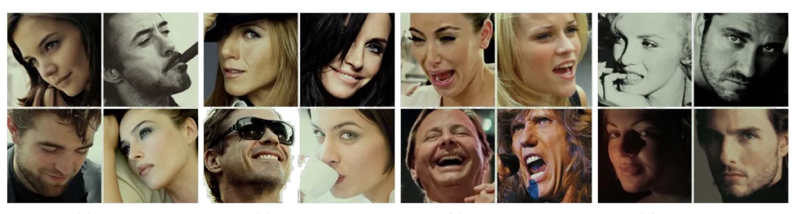
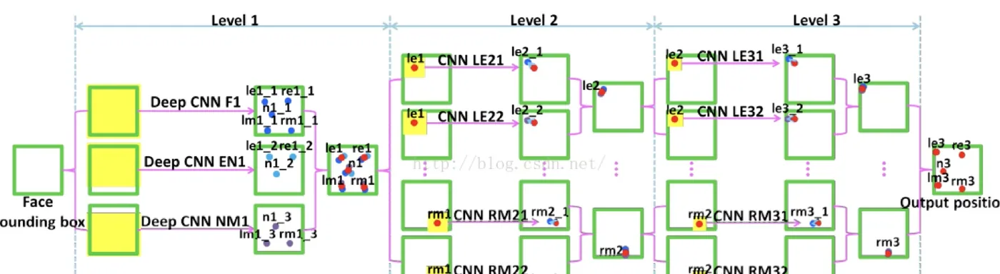
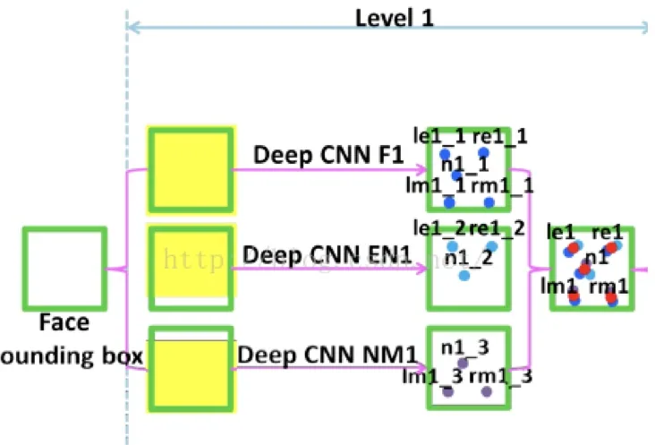
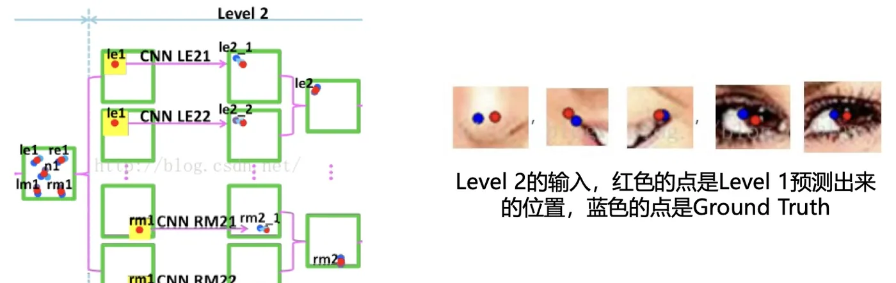

计算机视觉 · 第 8 章 人脸识别
8.3 人脸对齐：原理与 DCNN 网络
检测框把脸框出来之后，第二步是把它「摆正」。这一节讲人脸对齐：它要解决什么问题、原理是什么（找关键点，再用相似变换把脸搬到标准姿态）、在哪些地方用得上、难在哪里；然后进入本章第一个深度网络——2013 年 CVPR 的 DCNN，看它是怎么用三级级联的卷积网络把五个关键点一步步定位到像素级的。
1. 为什么需要人脸对齐
同一个人在不同的图像序列中可能呈现出不同的姿态和表情，这种情况是不利于人脸识别的。所以有必要将人脸图像都变换到一个统一的角度和姿态，这就是人脸对齐。
人脸对齐也叫关键点定位，就是输出人脸的关键点。它的原理是：先找到人脸的若干个关键点（基准点，如眼角、鼻尖、嘴角等），再利用这些对应的关键点，通过相似变换（旋转、缩放和平移）将人脸尽可能变换到标准人脸。

这一步为什么必要？因为后面的特征表征是对「像素」做运算的。如果拿一张歪头的脸和一张正脸直接比，网络首先要花力气去抵消这个角度差异，等于把「姿势」这种与身份无关的变化混进了特征里。对齐的本质是把姿态、尺度这些干扰因素在进入识别网络之前先归一化掉。
相似变换这个名字要留意：「相似」在这里是几何术语，指保持形状不变、只做旋转、缩放和平移的变换。它不改变人脸的形状结构，只调整朝向和大小——这正是「摆正」所需要的。
2. 人脸对齐的应用与挑战
关键点本身就是一种有用的中间表示，所以人脸对齐的价值不止于「给识别做预处理」。课件给出四类典型应用：五官定位、表情识别、增强现实、AI 换脸。

但关键点并不好找。课件的结论是：关键点检测受姿态、遮挡、表情、光照等的影响。

这四类干扰里，姿态和遮挡最麻烦：侧脸会让一侧的关键点被压缩甚至完全不可见，遮挡则直接让某个关键点失去外观依据。后面 DCNN、PFLD、MTCNN、RetinaFace 这些网络的改进，基本都可以归到「怎么在这些干扰下把关键点定位得更准、更省算力」上。
3. 人脸对齐网络的四条脉络
课件把这一方向的工作分成两类、四个代表网络，后面几节就是依次讲它们：
- 纯人脸对齐：
- DCNN 网络——2013 年在 CVPR 发表的经典文章，是利用深度学习进行人脸对齐的开山之作，首次将 CNN 用于人脸关键点检测；
- PFLD 网络——CVPR 2019 提出，一个高精度、轻量级的关键点检测模型。
- 人脸检测与对齐联合：
- MTCNN 网络——ECCV 2016，提出一种多任务级联的人脸检测框架，将人脸检测和人脸关键点检测同时进行；
- RetinaFace 网络——CVPR 2020，提出一种单阶段人脸检测器，通过联合外监督和自监督的多任务学习，对各种尺度条件下的人脸可以做到像素级的定位。
两条脉络的分工很清楚：前一条线只做关键点，追求精度和轻量；后一条线认为检测和对齐本就是一件事，用一套网络一次输出人脸框和关键点，省掉两级串联的开销。理解这个分类，后面四个网络就不会记混。
4. DCNN：级联卷积网络做关键点定位
DCNN 的整体结构分成三大部分：Level 1、Level 2、Level 3，每个 level 里面都包含着好几个 CNN 模型。
- 网络的输入：通过人脸检测器裁剪出 face bounding box，然后把它转换成灰度图，缩放到 39×39 大小的图片；
- 网络的输出：五个特征点——左眼、右眼、鼻子、左嘴角、右嘴角。

注意这里的「级联」思路：后一级的输入不是原图，而是以高一级预测出的特征点为中心的局部小图。这样每一级都在上一级的基础上做局部精修，越往后看得越细，定位也就越准——这是关键点检测里非常经典的一种设计。
5. Level 1：三个网络各看一部分
Level 1 由三个卷积神经网络组成，分别命名为 F1（输入为一整张人脸图片）、EN1（输入图片包含了眼睛和鼻子区域）、NM1（输入图片包含了鼻子和嘴巴区域）。
三个网络的输出规模都能算出来：
- F1：输出 5 个特征点的坐标，也就是 5 个点各一对 (x, y)，所以输出层有 10 个神经元；
- EN1：用于定位左眼、右眼、鼻子 3 个特征点，所以输出层有 6 个神经元；
- NM1：用于定位左嘴角、右嘴角、鼻子 3 个特征点，所以输出层有 6 个神经元。
F1 看全脸，EN1 和 NM1 各自盯住半张脸，于是鼻子这个特征点会被重复预测。课件给出的处理办法是：对重复预测的特征点进行位置平均。

这个设计值得多讲一句：让不同网络看不同的局部区域，等价于用「分区域专精」换「整体精度」；而把重复的预测做平均，又起到了集成（ensemble）的效果，比单个网络直接回归五个点更稳。
6. Level 2 与 Level 3：向局部要精度
Level 2 由 10 个卷积神经网络组成。它以 Level 1 预测的五个特征点为中心，用一个较小的 bbox（15×15）把这五个特征点的小区域范围内的图片裁剪出来，作为 Level 2 的输入。这 10 个 CNN 分别用于预测 5 个特征点——每两个 CNN 预测一个特征点，然后对两个 CNN 的预测结果求平均。

Level 3 同样由 10 个卷积神经网络组成：以 Level 2 预测的五个特征点为中心，重新进行裁剪；这 10 个 CNN 同样每两个负责一个特征点，预测结果求平均。
三级串起来看，DCNN 是一条典型的「由粗到细」的流水线：Level 1 在整张 39×39 的图上给出大致位置，Level 2、Level 3 不断缩小感受范围、在更小的邻域里反复精修，同时每一级都靠多个网络平均来抑制单点误差。这套「级联 + 平均」的思想后来被 MTCNN 直接继承。
本节小结
- 人脸对齐（关键点定位）把不同姿态、表情的人脸变换到统一的角度和姿态；原理是找到眼角、鼻尖、嘴角等关键点，再通过相似变换（旋转、缩放、平移）把人脸变换到标准人脸。它对付的是识别中的一大干扰源——姿态。
- 应用包括五官定位、表情识别、增强现实、AI 换脸；挑战是关键点检测受姿态、遮挡、表情、光照影响。
- 对齐网络分两条脉络：纯对齐（DCNN，2013 CVPR，首次把 CNN 用于关键点检测；PFLD，CVPR 2019，轻量高精度）与检测对齐联合（MTCNN，ECCV 2016；RetinaFace，CVPR 2020）。
- DCNN 分三级：输入 39×39 灰度图，输出左眼、右眼、鼻子、左嘴角、右嘴角五个点。Level 1 用 F1/EN1/NM1 三个网络分区域预测（输出层 10/6/6 个神经元，重复点做位置平均）；Level 2、Level 3 各用 10 个 CNN，以上一级预测点为中心裁 15×15 小图，每两个 CNN 负责一个点并取平均——整体是「由粗到细 + 多网络平均」的级联结构。